강의에서 같이 해 본 것을 집에서 그대로 따라 하는 페이지입니다. 챗GPT 무료 계정이면 충분합니다.
내 자리를 고르면 문장이 채워집니다. 복사해서 챗GPT에 붙여 넣으세요.
나는
[ ] 자리는 직접 고쳐 써도 됩니다. AI가 질문하면 번호만 골라 답하세요.
어디서: 챗GPT 앱 · 무료
어디서: 챗GPT 앱 → 왼쪽 위 메뉴 → 맨 아래 내 이름 · 한 번만 해 두면 됩니다
설정 → 기록 및 데이터 → '모두를 위한 모델 개선' 끄기
앱 버전에 따라 메뉴 이름이 '데이터 제어'일 수 있습니다.
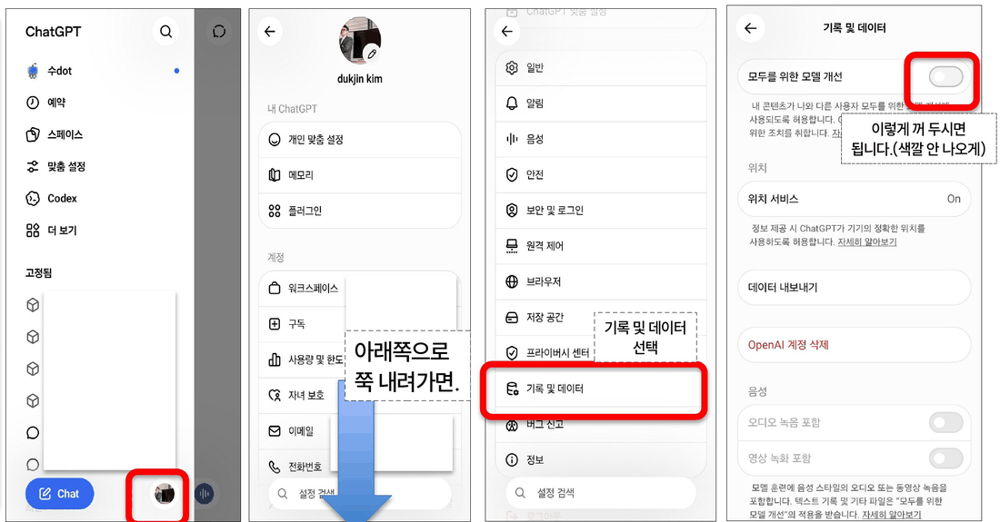
설정 → 메모리 → '메모리 요약' 열어 보기
AI가 나에 대해 기억하는 내용이 적혀 있습니다. 남기기 싫은 내용은 지우고, 필요하면 메모리를 끕니다.
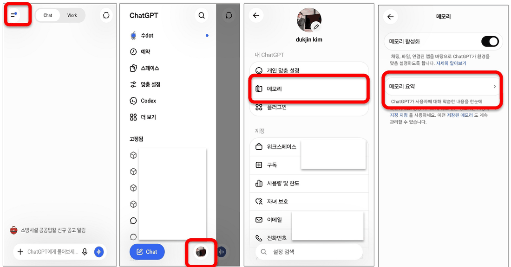
대화창 오른쪽 위 아이콘 → 임시 채팅
대화 목록과 메모리에 남지 않습니다. 다만 안전 확인용으로 최대 30일 보관될 수 있으니, 임시 채팅에도 주민번호·계좌 같은 개인정보는 넣지 않습니다.
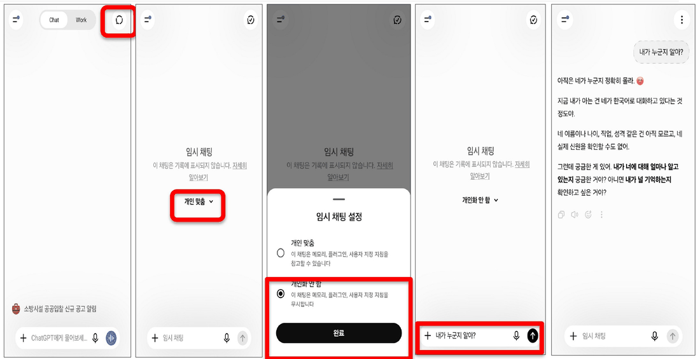
프로필 → 개인 설정 → 개인 맞춤 설정. 한 번 써 두면 모든 대화에 적용됩니다.
나를 잘 아는 AI는 편합니다. 그만큼 내 정보가 쌓여 있다는 뜻이니 가끔 열어 보세요. 화면은 강사 계정(유료)이라 무료 계정은 메뉴 모양이 조금 다를 수 있습니다.
어디서: 입력창 왼쪽 ＋ → 더 깊이 생각하기 · 컴퓨터는 입력창 오른쪽 Think
[ ] 자리와 조건은 내 사정에 맞게 고쳐 쓰세요. 마지막 줄 "조건을 다 지켰는지 확인해 줘"가 핵심입니다.
그림을 누르면 크게 볼 수 있어요.
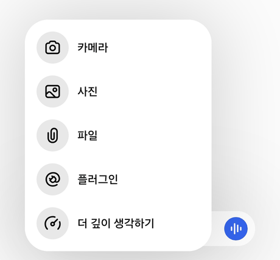
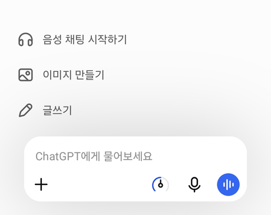
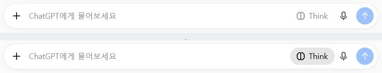
챗GPT 무료 계정 · 2026년 11월 4일 강사 촬영 · 유료 계정은 켜고 끄는 대신 생각의 깊이를 막대로 고릅니다
어디서: 챗GPT · 무료 (제미나이 · 클로드에서도 됩니다)
그림을 누르면 크게 볼 수 있어요.
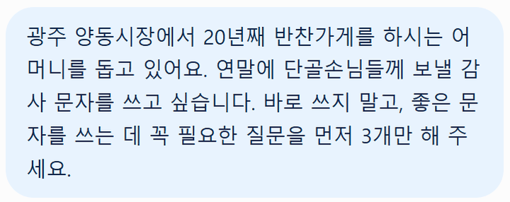
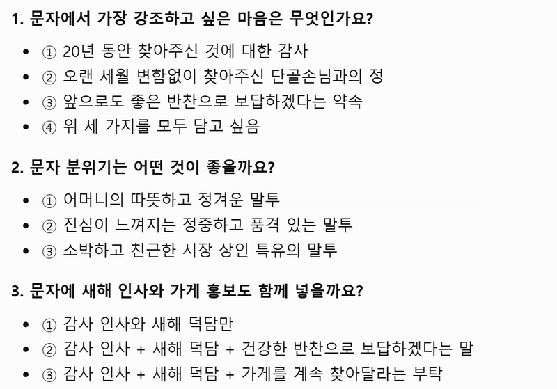
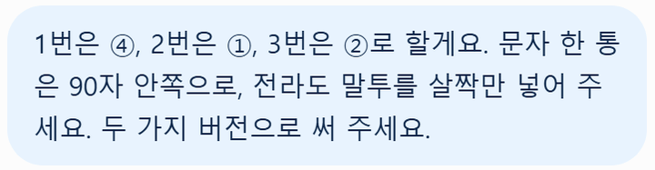
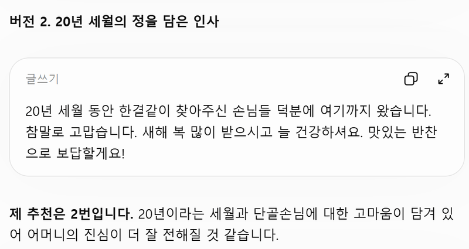
챗GPT 무료 계정 · 2026년 11월 10일 강사 실행
어디서: 챗GPT · 무료 계정은 하루에 몇 장만 됩니다
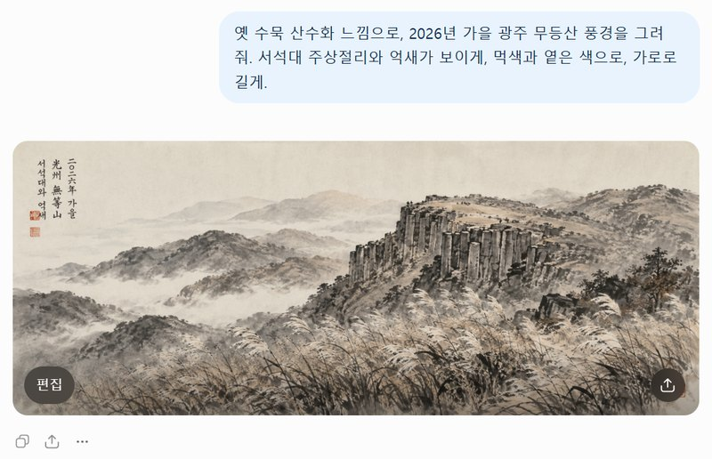
챗GPT 무료 계정 · 2026년 11월 11일 강사 실행
내 일에서 챗GPT 기능으로 · 지시서에 넣는 이 한 줄은 도구가 바뀌어도 남습니다
AI와 오래 가는 세 가지 약속
주민번호 · 계좌 · 비밀번호, 남의 개인정보. 민감한 질문은 임시 채팅으로.
숫자 · 날짜 · 법 · 지원금 조건은 출처를 눌러 원문으로. AI 답은 출발점입니다.
듣기 좋은 말일수록 한 번 더. "반대 의견과 약점도 말해 줘."
결제 · 송금 · 발송 버튼만큼은 끝까지 내 손에 쥐고 계세요.
다음 도구 두 가지 · 오늘 배운 지시서 한 줄은 그대로 통합니다
어디서: 클로드 (claude.ai · 앱) · 무료로 시작
그림을 누르면 크게 볼 수 있어요.
내가 보낸 말 (원문)광주 양동시장 반찬가게에서 쓸 '단골 도장판' 웹 앱을 만들어 주세요. 손님 이름과 전화번호 뒷자리 4자리로 찾고, 올 때마다 도장 1개를 찍고, 10개가 모이면 '반찬 한 가지 서비스'를 크게 보여 주세요. 어머니가 휴대폰으로 쓰실 거라 글자와 버튼은 크고 단순하게, 예시는 가상 손님 5명으로 넣어 주세요.
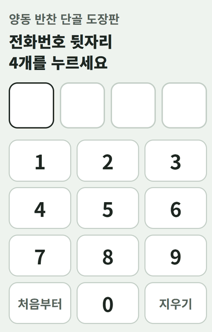
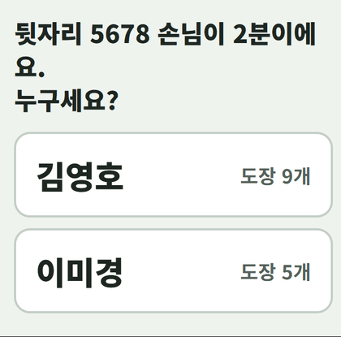
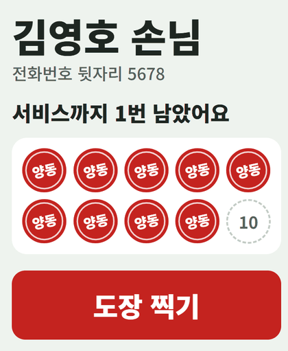
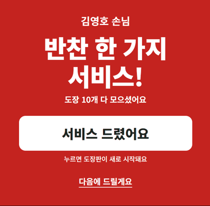
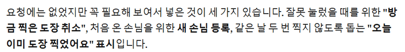
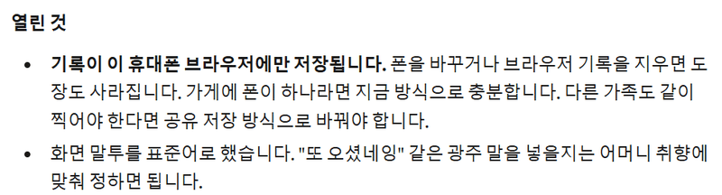
클로드 · 2026년 11월 10일 강사 실행 · 손님 이름은 모두 가상
어디서: 제미나이 노트북 (옛 노트북LM) · 구글 계정 · 무료로 시작
자료가 없다면: 오늘 오픈카톡방에 올라온 강의 요약본을 넣어 보세요. 복습 팟캐스트가 됩니다.
스튜디오 → AI 오디오 오버뷰 → 형식 '요약', 언어 '한국어' → 맨 아래 칸에 적습니다.
그림을 누르면 크게 볼 수 있어요.
넣은 자료: 우리 동네 AI 기사 3개
MTN · 전남광주 도시 전체를 'AI 테스트베드'로 만든다
지디넷코리아 · 정부·민간 협력 '국가AI컴퓨팅센터' 착공
파이낸셜뉴스 · 장성군에 20MW 규모 AI 데이터센터 본격 구축
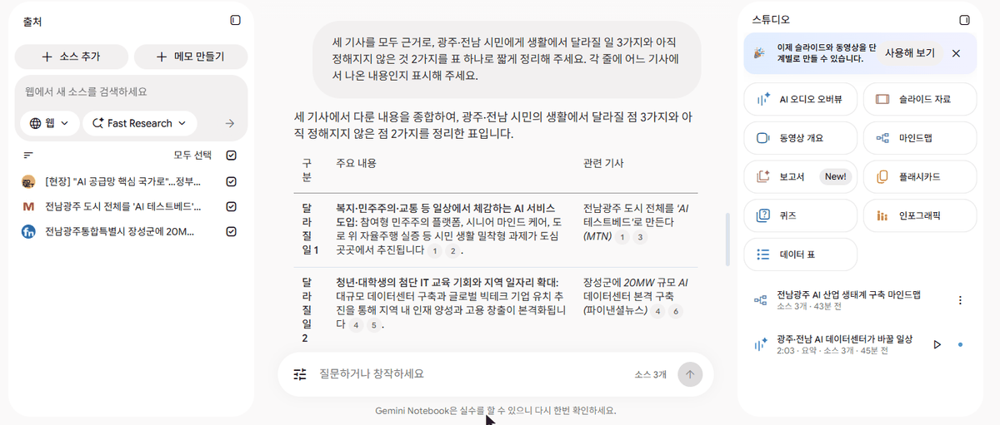
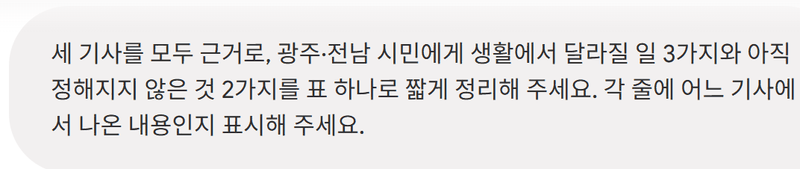
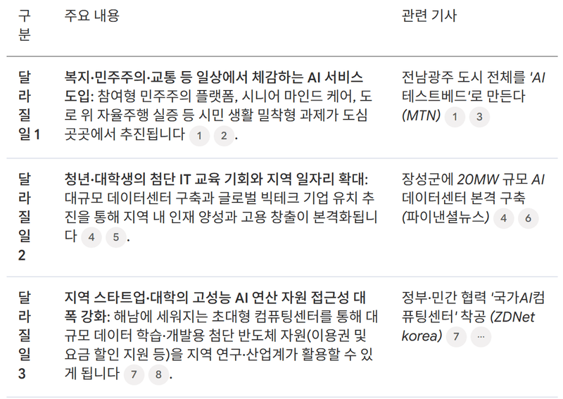
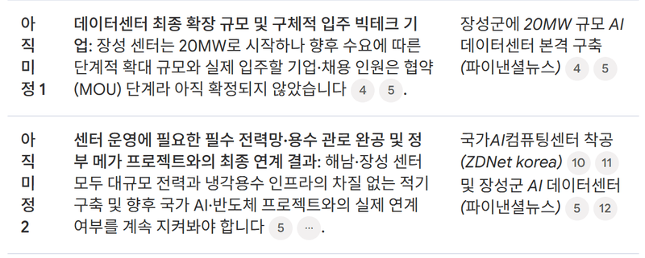
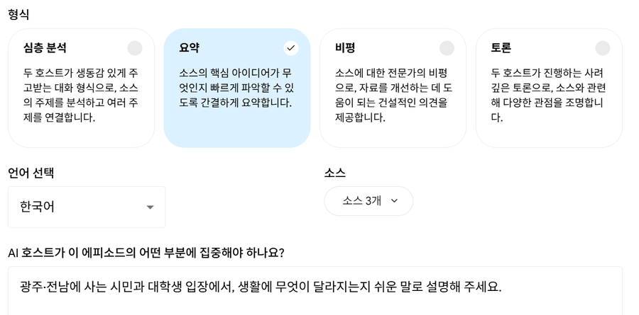
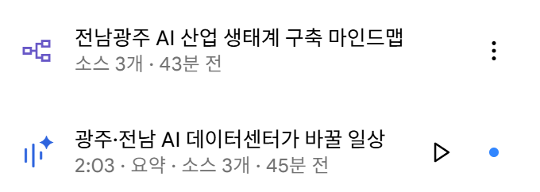
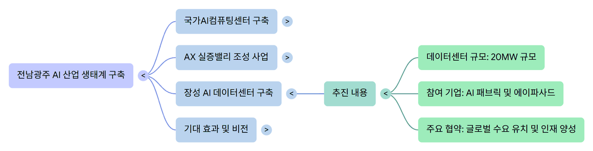
제미나이 노트북 · 2026년 11월 10일 강사 실행
시간이 있을 때 하나씩
손님보다 손님의 AI가 먼저 고르는 시대입니다. 우리 가게가 AI의 답 안에 있는지 확인해 보세요.
오늘 이야기는 『AI 2027 트렌드&활용백과』(11월 2일 출간)에 들어 있습니다. 앞쪽은 2027년 AI 트렌드 10가지, 뒤쪽은 도구를 직접 써 본 활용편입니다.
온라인 서점에서 'AI2027'로 검색하세요.